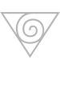

درباره کانال چپ انرژی
کندالینی آرزوی خداوند است، آرزو برای خدا نیست. خود، آرزوی خداوند است. پس کندالینی را فقط میتوان با آن آرزو بیدار کرد. آرزوی خداوند در درون شماست که مورد رحمت قرار گرفته است و آرزوی خداوند شاکتی (قدرت) است و آرزوی خداوند آن است که او شما را دوست دارد. آرزوی او این است که به شما همه قدرتهایش را و تمام ظرفیت عشق ورزیدنش را عطا کند. این آرزوی اوست. کندالینی درون شما جای دارد و خفته است. پس وقتی بیدار شود آرزوی خداوند برآورده میشود. و به این ترتیب شما به رضایت خودتان نیز دست مییابید. تا خودتان خدا نباشید، نمیتوانید به آرزوی خداوند فرمان بدهید. ولی بعد از گرفتن خودآگاهی او به شما قدرت خود را ارزانی میدارد که میتوانید آرزوی او را به کار گیرید. شما میتوانید کندالینی مردم را که آرزوی خداوند است بیدار کنید و شما میتوانید باعث شوید که خداوند آرزو کند. شری ماتاجی نیرمالا دوی، لندن، بریتانیا، 11 نوامبر 1979

این کندالینی مادر معنوی هر فرد است و تمام آرزوهای گذشته فرزندش را می داند یا ثبت کرده است. او مشتاق است به فرزندش تولدی دوباره بدهد و در طول عروجش، شش مرکز انرژی را تغذیه کند. وقتی انسان به تمام قدرت همه جا حاضر متصل نباشد، مانند ابزاری است که به برق متصل نیست و هویت ندارد، معنا ندارد، هدف ندارد. به محض اتصال، تمام آنچه که در داخل این وسیله تعبیه شده است شروع به کار می کند و خود را نشان میدهد. هنگامی که این کندالینی بالا برود، شما را به قدرت فراگیر، که حیاتی است و اقیانوسی از دانش و همچنین اقیانوسی از سعادت است، متصل می کند. شری ماتاجی نیرمالا دوی. پکن، چین، ۱۳ سپتامبر ۱۹۹۵ کندالینی انسان انعکاسی از قدرت ابدی عشق خداوند است. منبع آن نیرویی عالمگیر است که فکر میکند، درک میکند، هماهنگی ایجاد میکند و همه چیز را در یک الگوی زیبا و هماهنگ پیشرفت به نتیجه میرساند، از کوچکترین ذرات اتم تا تمام موجودات و کهکشانها.
تاریخچه کندالینی
از هزاران سال پیش، در متون مقدس، به وجودی رمزآلود در انسانها اشاره شده است. این کهنالگوی ظریف و زنانه از انرژی معنوی، در سانسکریت با نام کندالینی شناخته میشود، به این معنی که سه دور و نیم پیچ خورده است. تا پیش از عصر حاضر، علم به وجود کندالینی و قدرتهای آن، دانشی مقدس و انحصاری محسوب میشد که از استاد به شاگرد منتقل میگردید. برای مثال این دانش در فرقههای خاصی از سنتهای یوگایی، مانند ناتها پانتهیس مخفی نگه داشته شده بود، با این حال در بسیاری از فرهنگها و سنتهای باستانی به جنبههای مختلف کندالینی اشارههای فراوانی وجود دارد. برای مثال شانکاراچاریا ، فیلسوف و اندیشمند هندی، در قرن هفتم میلادی، کندالینی را اینگونه توصیف کرده است: "کندالینی مانند مار ماده کوچکی است که سه دور و نیم دور خود پیچیده و سرش رو به بالا است. او همچون حلقهای از رعد و برق است."
لائوتسه ، فیلسوف و حکیم بزرگ چینی هم، در قرن ششم پیش از میلاد، کندالینی را در کتاب معروف خود، تائو ته چینگ، اینچنین وصف کرده است: "بیشکل و در عین حال کامل، پیش از آسمان و زمین وجود داشته است. خاموش و بیحد و حصر، تنها و تغییرناپذیر. او مادر همه چیزهایی است که در زیر بهشت قرار دارند. من نام او را نمیدانم برای همین آن را تائو مینامم." کبیر (1400 میلادی) و گیانادوا (1200 میلادی) نیز بیداری کندالینی را توصیف کردهاند. از جمله به محل قرارگیری کندالینی در بدن، در فرهنگها و سنتهای قدیمی اشارات زیادی شده است. آنها به استخوان مثلثی شکل انتهای ستون فقرات که در آن کندالینی آرمیده است اشاره کردهاند، استخوانی که به هیچ طریقی نابود نمیشود. این استخوان را در زبان فارسی استخوان"خاجی" نامیده میشود. استخوان خاجی، استخوانی بزرگ، تخت و سه گوش در بدن انسان است که در پایه ستون مهرهها قرار دارد(خاج در فارسی بهمعنی صلیب است و استخوان خاجی بهمعنای استخوان صلیبیشکل است).
نام انگلیسی این استخوان sacrum bone است. ساکروم از کلمه لاتین "sacred" به معنی مقدس گرفته شده است. آنها این استخوان را "Os Sacrum" نامیدهاند که به معنی استخوانی مقدس است و از ترجمه مستقیم کلمه قدیمیتر یونانی "Heiron Osteum" به دست آمده است. منابعی هم در فرهنگ قدیمی وجود دارد که این استخوان را "Osiris" نامیدهاند که به معنی خدای رستاخیز و کشاورزی است. در مزامیر ۳۴:۲۰ انجیل هم به این استخوان مقدس اشاره شده است: "او از تمام استخوانهای خود محافظت میکند. هیچ یک از آنها نمیشکند."

کادوسئوس که به نماد کیمیاگیری و داروسازی در اروپای قرون وسطی تبدیل شده، دو مار را نشان میدهد که هفت بار به سمت بالا پیچ و تاب میخوردند. بسیاری از آثار هنری باستانی شکل مارپیچ سه دور و نیمی کندالینی را به تصویر میکشند.
در قرآن و احادیث هم به وجود استخوانی نابود نشدنی که در زمان قیامت، رستاخیز از آن شروع میشود اشاره شده است.
در این ارتباط به حدیثی معروف میتوان اشاره کرد:
ﻋﻦ ﺭﺳﻮﻝ اﻟﻠﻪ ﺻﻠﻰ اﻟﻠﻪ ﻋﻠﻴﻪ ﻭﺳﻠﻢ – ﻓﺬﻛﺮ ﺃﺣﺎﺩﻳﺚ ﻣﻨﻬﺎ – ﻭﻗﺎﻝ ﺭﺳﻮﻝ اﻟﻠﻪ ﺻﻠﻰ اﻟﻠﻪ ﻋﻠﻴﻪ ﻭﺳﻠﻢ: "ﺇﻥ ﻓﻲ اﻹﻧﺴﺎﻥ ﻋﻈﻤﺎ ﻻ
ﺗﺄﻛﻠﻪ اﻷﺭﺽ ﺃﺑﺪا، ﻓﻴﻪ ﻳﺮﻛﺐ ﻳﻮﻡ اﻟﻘﻴﺎﻣﺔ" ﻗﺎﻟﻮا ﺃﻱ ﻋﻈﻢ ﻫﻮ؟ ﻳﺎ ﺭﺳﻮﻝ اﻟﻠﻪ ﻗﺎﻝ: "ﻋﺠﺐ اﻟﺬﻧﺐ."
ترجمه: در بدن انسان استخوان کوچکی هست که هرگز در خاک پوسیده نمی شود؛ در قیامت از همان تکه استخوان بر انگیخته
می شوند؛ عرض کردند ای رسول خدا! این استخوان کدام است؟ فرمود: دُمچه است.
سوره التغابن آیه:٧
زَعَمَ الَّذِینَ کَفَرُوا أَنْ لَنْ یُبْعَثُوا ۚ قُلْ بَلَىٰ وَ رَبِّی لَتُبْعَثُنَّ ثُمَّ لَتُنَبَّؤُنَّ
بِمَا عَمِلْتُمْ ۚ وَذَٰلِکَ عَلَى اللَّهِ یَسِیر
کافران میپندارند که هرگز زنده و برانگیخته نخواهند گردید! بگو: چنین نیست که میپندارید، به پروردگارم سوگند!
زنده و برانگیخته خواهید شد و سپس از آن چیزهائی که میکردهاید با خبرتان خواهند کرد و این کار برای خدا ساده و
آسان است.
همه اینها نشان می دهد که در طول تاریخ مردم به طور ناخودآگاه توسط این قدرت ظریف هدایت شده اند.
بیدار شدن کندالینی
اهمیت این قدرت یعنی کندالینی به قدری زیاد است که همیشه افرادی مشتاق بیدار کردن این قدرت در خود بودهاند، ولی
به دلیل جلوگیری از دستیابی افراد بیصلاحیت به آن، پدیده بیدار شدن کندالینی در هالهای از رمز و راز نگهداشته
شده است. با این حال، استادان فرزانه و خودآگاه، به شکل سنتی و بسیار نادر، کندالینی یک نفر را که زیر نظرشان، پس
از سالها تمرینات سخت و طاقت فرسا، از امتحانات مختلف و ریاضتهای بسیار، سربلند بیرون میآمد بیدار میکردند.
تا آن که در یک اتفاق بینظیر در ۵ می ۱۹۷۰، شری ماتاجی نیرمالا
دوی روشی را کشف کرد که به وسیله آن امکان بیداری
انرژی کندالینی در تمامی انسانها فراهم شود.
از آن پس هزاران نفر جوینده حقیقت، صرف نظر از جنسیت، سن، نژاد، مذهب،
قومیت، زبان و هر هویتی که برای خود میشناسند، در سرتاسر جهان توانستهاند خودآگاهی بگیرند و از فواید آن
بهرهمند شوند. آنها همه افرادی معمولی هستند که تنها با آرزوی پاک درونشان برای تجربه حقیقت مطلق ، بدون کشیدن
ریاضت یا انجام هر روش سخت و جانکاه خاصی، به این موهبت دست یافتهاند.
شری ماتاجی در مورد مکاشفه خود در بیداری کندالینی ازلی چنین میگویند:
"من کندالینی ازلی را دیدم که مثل کوره بزرگی بالا میرفت و آن کوره بسیار بیصدا بود ولی ظاهری سوزان داشت. مثل
فلزی که حرارت بدهید و آن فلز رنگهای زیادی داشته باشد. به همان ترتیب کندالینی مثل یک کوره بزرگ پیدار میشود.
مثل کورهای که شبیه یک تونل باشد، نیروگاههایی که با سوزاندن زغال سنگ تولید برق میکنند و آن کوره مثل یک
تلسکوگ از هم باز شد و بیرون آمد. با صدای شوت شوت شوت شوت."
تجربه معنوی و درونی شری ماتاجی از بیداری کندالینی و عملکرد پیچیده آن در سیستم ظریف ما، پایه و اساس مدیتیشن
ساهاجایوگا را در تمام جهان تشکیل میدهد. او استادی تمام عیار و با اقتدار است که چگونگی ورود کندالینی در مراحل
اولیه تشکیل جنین، ماهیت الهی آن و دلایلی که چرا این نیروی قدرتمند عشق الهی به آزادی ما احترام میگذارد و با
اراده آزاد ما تداخل پیدا نمیکند را شرح میدهد.
شری ماتاجی بسیاری از مفاهیم نادرست را در مورد خطرناک یا مضر بودن بیداری کندالینی روشن کرد. او کندالینی را
مادر معنوی و ذاتی ما معرفی کرده است که در طول سفر زندگی ما را همراهی میکند؛
کندالینی صبورانه منتظر مانده
است
تا ما خودآگاهی خود را بگیریم و از مواهب این اتفاق خجسته استفاده کنیم. همچون تمام جانداران روی زمین که
مادرانشان تنها از آنها حفاظت و حمایت میکنند و به آنها آسیبی نمیرسانند، مادر معنوی درون ما نیز ما را محافظت
میکند تا به قدرتهای تکاملی نهفته در خود برسیم.
کندالینی چه میکند؟
برای تکامل و رشد معنوی، لازم است انرژی کندالینی از حالت خفته درآید و بیدار شود. بعد از این بیداری، فرد خودآگاهی خود را دریافت میکند، بدین معنی که از خویشتن واقعی خود آگاه میشود. هنگامی که کندالینی به روش ساهاجایوگا، به شکلی بسیار زیبا و آسان و کاملا رایگان بیدار شود ، در مسیر ستون فقرات بالا می رود و از میان شش مرکز انرژی درون بدن عبور و آنها را تغذیه و یکپارچه مینماید. در نهایت این قدرت وارد محل فونتانل میشود که به آن تالو (براهماراندرا) هم میگویند، بخشی از سر که در نوزادان نرم است.
هنگامی که کندالینی از این منطقه عبور می کند، آن را به شکل یک نسیم ملایم خنک تجربه میکنیم، گویی یک فواره بیرون
میزند. جالب اینجاست که نام فونتانل از کلمه قدیمی فرانسوی fontanelle گرفته شده است که به معنای "چشمه کوچک"
است. در این حالت با انرژی همهجاحاضر عشق الهی متصل میشود، انرژی فراگیری که به آن در کتاب مقدس (انجیلی) نسیم
خنک روحالقدس، در قرآن روح و در متون مقدس هندی پارامچایتانیا میگویند.
وجود این انرژی همهجاحاضر را قبل از گرفتن خودآگاهی نمیتوان احساس کرد ولی بعد از آن میتوان آن را روی
سرانگشتان، در کف دستها یا در بالای ملاج سر خود احساس کنید. به علاوه این روند باید خود به خودی باشد. ساهاجا: ساها به معنی "با" و جا به معنای "متولد شده با" است؛ به این معنی که کسب یگانگی با
قدرت همهجاحاضر خداوند حقی است که از بدو تولد به هر انسانی داده میشود. انرژیهای ذهنی محدود هستند.
انرژی محدود ذهنی که به شکل واقعی ما را حمایت نمیکند، حرکتی خطی دارد و به نقطهای میرسد، متوقف میشود و از
آنجا مثل بومرنگ به سمت ما برمیگردند. در وقع این حرکت ذهنی و خطی گاهی مثل مجازات عمل میکند.
بنابراین برای
رشد و تعالی به انرژی بهتر، بالاتر و عمیقتری نیاز داریم که آن کندالینی است. تنها چیزی که باید به آن توجه کرد
آنست که بیدار شدن کندالینی و در نتیجه آن کسب خودآگاهی یک
فرآینده زنده تکاملی است که به خاطر آن چیزی پرداخت نمیشود. درست مثل کاشتن یک دانه در مادر زمین است. این دانه
میروید چون مادر زمین قدرت رویاندن آن را دارد و دانه هم ویژگی ذاتی روییدن را دارد. کندالینی معمولا در بچهها
تا سن ۱۲ سالگی بیدار است ولی بعدا به دلیل استخوانی شدن فونتانل و در نتیجه بسته شدن مسیر، کندالینی به حالت خفته
در میآید. در بعضی افراد به طور خود به خود کندالینی بیدار است. از جمله میتوان به افراد معروفی چون مولانا،
شکسپیر، چارلی چاپلین، لئوناردو داوینچی، لئو تولستوی، مهاتما گاندی، کارل یونگ، مارتین لوترکینگ، آنتوان سنت
اگزوپری و آبراهام لینکلن اشاره کرد.
پس از بیدار شدن کندالینی به روش ساهاجایوگا چه اتفاقی میافتد؟
حال مشکل اینجاست که چگونه افکار را از ذهن خود پاک کنیم. افکار همیشه در ذهن شما وجود دارند ولی وقتی کندالینی
بیدار میشود، اتفاقی که میافتد این است که افکار بلندتر میشوند و بین افکار شکاف وجود دارد و این شکاف محل
آرامش ماست. اگر شما به آن آرامش برسید، دنیا هم میتواند برسد. تنها با پلاکارد دست گرفتن، تنها با فریاد زدن
نمیتوانید به آرامش برسید. آرامش تنها در قلب انسانها باید برقرار شود. هنگامی که شما روح را در جای اصلی خودش
مستقر کنید آنجا روح رحمت آرامش را آشکار میکند. وقتی از رحمت آرامش لذت ببرید دیگر دلتان جنگ نخواهد خواست. به
فکر جنگ نخواهید افتاد و آن مرحلهای است که بشر باید به سوی آن تعالی یابد.
شری ماتاجی نیرمالا دوی، لندن، بریتانیا، 10 جولای 1984
شری ماتاجی کندالینی را مانند طنابی با هزاران رشته توصیف کرده است. کندالینی از کلمه سانسکریت "کندالا" به معنی کلاف عشق مشتق شده است، وقتی خودآگاهی میگیریم تنها یک یا دو رشته از آن که مثل یک مادر به دور خود پیچیده است باز میشود و راه خود را از طریق کانال مرکز یا سوشومنا نادی، تا بالای سر میپیماید؛ در طول مسیر به چاکراهای سر راه خود رخنه میکند و آنها را پاک مینماید. با مدیتیشنهای مرتب روزانه، به تدریج رشتههای بیشتری از کندالینی بالا میآیند وارتباط ما را با نیروی عشق همهجاحاضر تقویت میکنند. ویژگیهای این قدرت بروز پیدا میکند. علائم بیدار شدن کندالینی، کاهش افکار، سکوت عمیق و قرار گرفتن در زمان حال است. همچنین بر بالای سر و روی کف دستان ما نسیم خنکی احساس میشود. آثار کندالینی در سطح فیزیکی و بر سیستم عصبی مرکزی ما نیز نمایان میشود و با برداشته شدن تنشها و فشارهای مختلف بر سیستم عصبی عملکرد اندامهای وابسته به آنها نیز بهتر خواهد شد. بیماریها کم کم از بین میروند و از پیدایش بیماریهای جدید هم جلوگیری میشود. برای آشنایی با دیگر عملکردهای کندالینی، به بخشهای دیگر ساختار سیستم ظریف رجوع شود.